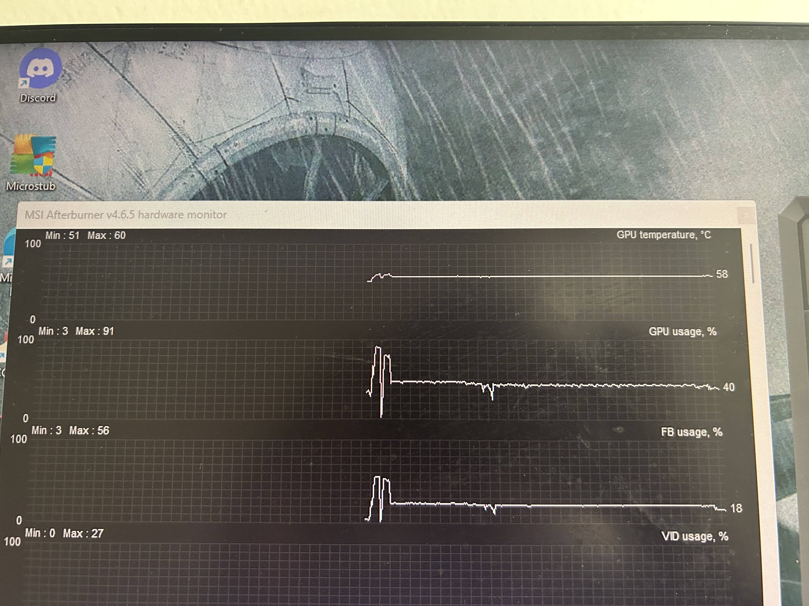

In our experiment, we tested how different GPU temperatures affect the frame rate of a game by using different GPU fan speeds.
The goal was to understand whether cooling plays a role in maintaining stable performance during gameplay.
Observation
We ran the game at two different GPU fan speeds; one at the minimum fan speed and the other at the maximum fan speed
resulting in two different temperatures which enabled us to carry out this experiment. The results showed a clear difference in performance.
Performance test on Fortnite
Low Temperature
At lower temperatures, the frame rate was higher and remained consistent throughout the session.There were
no major dips or stutters, and the gameplay felt smooth
High Temperature
At higher temperatures, the frame rate was lower and unstable. There were dips in performance,
which affected the overall gaming experience
Performance test on Valorant
Maximum Fan Speed
Performance test on Valorant
At the maximum fan speed, the frame rate was higher and remained consistent throughout the session.
There were no major dips or stutters, and the gameplay felt smooth.
Minimum Fan Speed
At the minimum fan speed, the frame rate was lower. Compared to the Fortnite, the frame rate was decently stable,
but it was still lower compared to when the fan speed was set to maximum.
Observations between Fortnite Test & Valorant Test
When testing the two scenarios, what we manipulated in the experiment was the GPU fan speed;
increasing airflow should lower down the overall temperature of the GPU; However, when tested in Valorant, the end temperature of the GPU
came up to around the SAME TEMPERATURE while running the game, but the starting temperature of the GPU
when fan speed was at a 100% was much lower compared to minimum fan speed

Even thought the temperature was the same, the overall performance of the game was significantly different.
Game had more frames per second with maximum fan speed even though thee temperature was the same
Key Points
Lower GPU temperature result in better and more consistent frame rates.
Higher GPU temperatures cause Perfromance drops and unstable frame rates.
Keeping the GPU cool is important for smooth and optimal gameplay